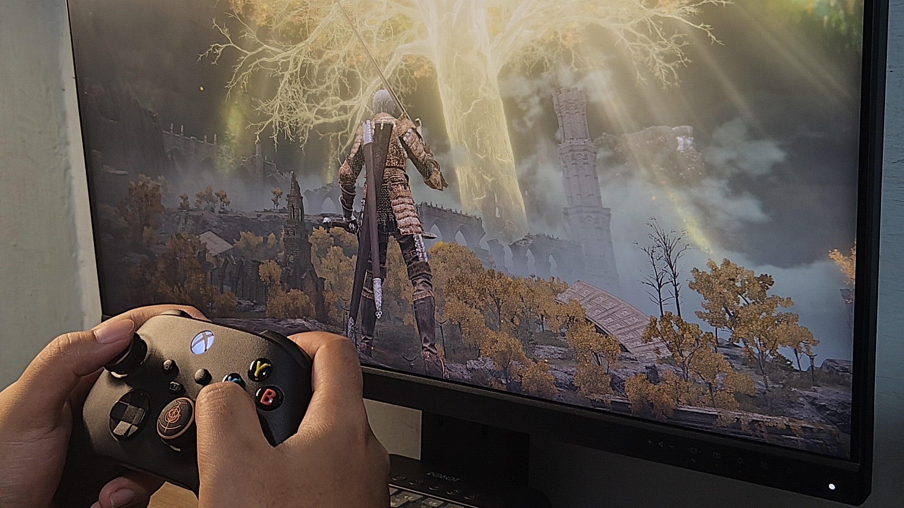
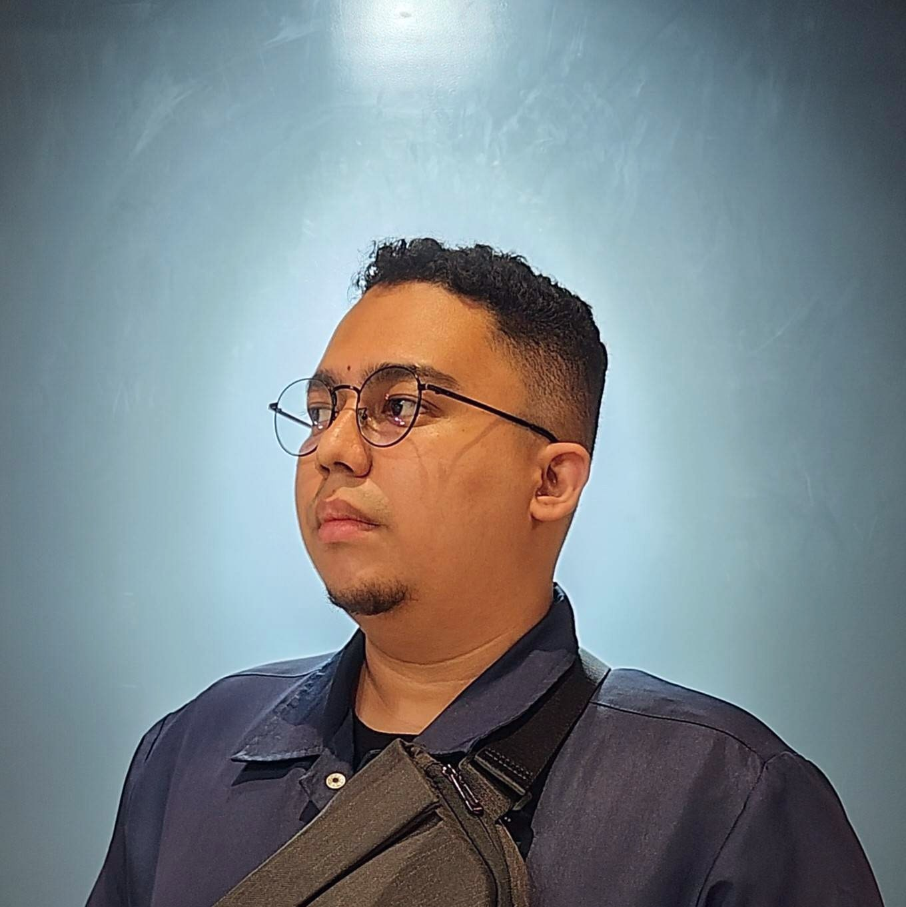
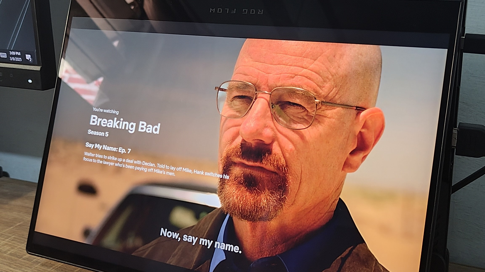
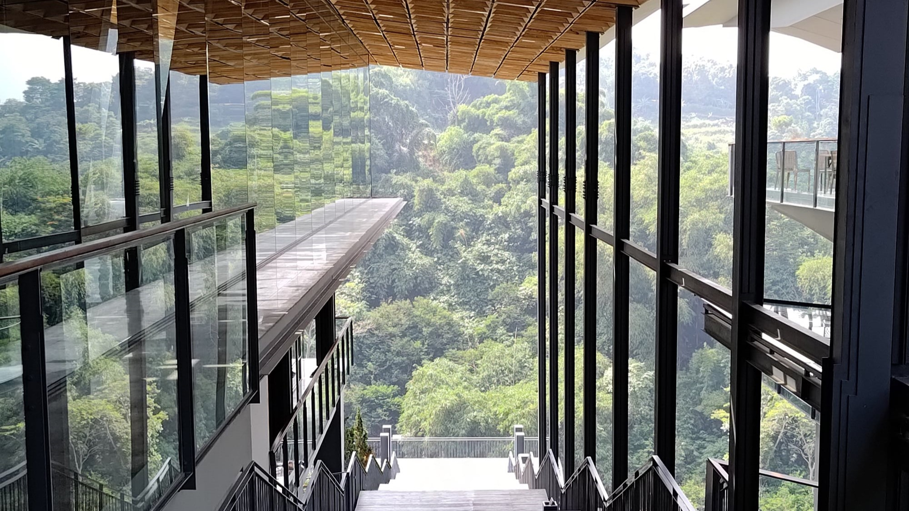
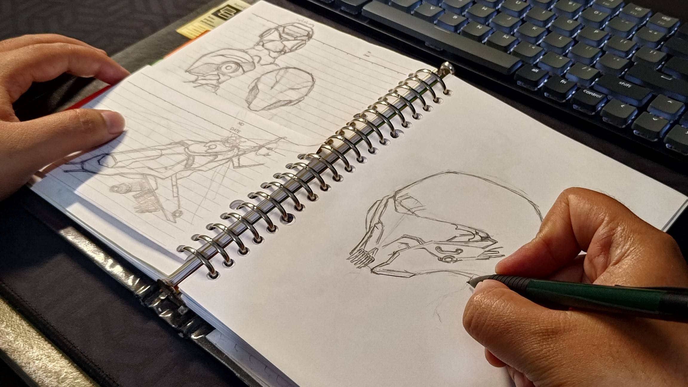

Off-screen / 01Casual gamer
A controller, a good RPG, and a world worth getting lost in. Elden Ring is very much my kind of escape.
Frontend developer. Design enthusiast. Endlessly curious.
Hello, salam kenal. I’m Danis.

01 / My story
I build digital experiences that look considered, feel intuitive, and work beautifully.
It started with Blogger templates in high school. A little HTML, a little CSS, and a lot of “what happens if I change this?” That curiosity became a career in frontend development and a lasting love for design.
With 5+ years in the industry, I work across React and Next.js applications, UI/UX design, and visual identities. I enjoy making complex things easier to understand—and finding the unexpected detail that makes them memorable.
“Don’t make it difficultExplore my résumé ↓
for the user.”A professor’s advice. A lasting design principle.
02 / Along the way
Frontend Developer
Tangerang, Indonesia
Frontend Developer
Bandung, Indonesia
Fullstack Developer Intern
Bandung, Indonesia
Diploma of Software Engineering
GPA 3.68
03 / Always learning
04 / Outside the browser

Off-screen / 01A controller, a good RPG, and a world worth getting lost in. Elden Ring is very much my kind of escape.

Off-screen / 02From Interstellar to Shutter Island: stories that stay with you after the credits.

Off-screen / 03Finding small, unexpected moments through a phone camera. Sometimes in the real world, sometimes in a game.

Off-screen / 04Pens, paper, and unfinished sketches. An idea often feels clearer before it reaches a screen.
A fresh idea, a complex challenge, or a simple hello.
I’d love to hear what you have in mind.